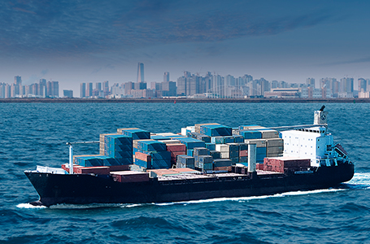

21世纪国际产业物流中心港
- Home
- 投资优势
- 投资环境
- 21世纪国际产业物流中心港
21世纪国际产业物流中心港
蔚山港位于韩半岛东南端，是国内最大工业物流港同时也是世界四大液体货物吞吐港。
腹地拥有国内最大工业园区以及大规模液体货物仓储设施，稳据东北亚液体货物中心港湾之地位，还可处理钢铁、 金属、 机械类、 木材等各类货物，国内有34%的汽车、 33%的船舶由蔚山港出口到各地。
目前拥有115泊位靠岸能力和7,100万吨的装卸能力，去年全年处理创下了2.02亿吨的港湾吞吐量。
待2020年蔚山新港项目竣工后，蔚山港将会拥有132舱位靠岸能力和全年8千9百万吨的装卸能力、 以及全年处理2亿5千3百万吨的港湾吞吐量，蔚山新港将继欧洲ARA、 美国休斯顿、 亚洲新加坡成为世界4大石油中心。
- 
-

蔚山港
以2013年为准
| 液体货物处理居全国第一、港湾吞吐量居全国第三、船舶进港居全国第二 | |
|---|---|
| 靠岸能力(同时) | 115泊位 |
| 装卸能力(每年) | 71,728,000吨 |
| 港湾吞吐量(每年) | 202,031,000吨 |
2020年 (蔚山新港竣工时)
| 建造世界四大石油中心 | |
|---|---|
| 靠岸能力 | 132泊位 |
| 装卸能力 | 88,817,000 RT/年 |
| 港湾吞吐量 | 252,661,000 RT/年 |